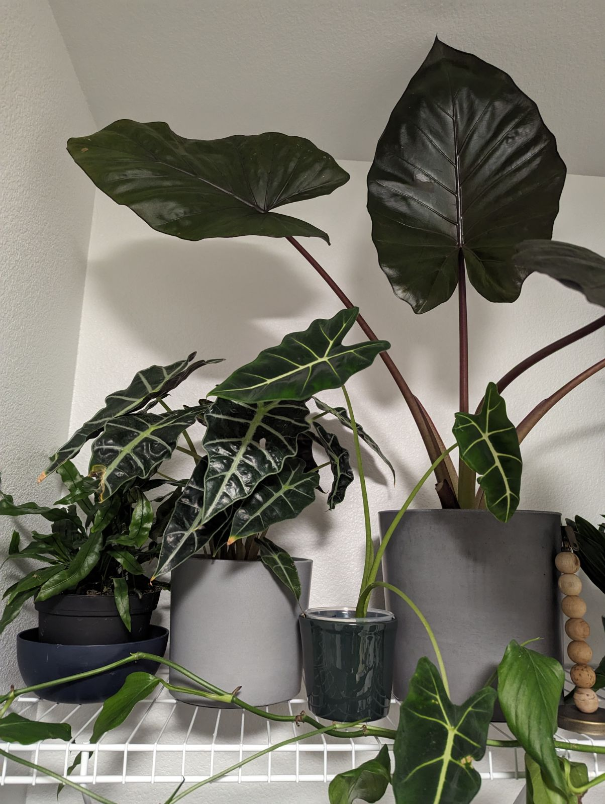

Creative Ways Of Changing The Way You Think Using UX
Oftentimes, when we interact with video games on our app, it is likely that you will come across different UX designs to keep the gamers from staying in the app through buying in-game currency or items.
The way to display these items are quite crucial than not. Visual and appealing photos that describes the perks of having more "coins", empahsizing purchase buttons and/or size and color of such button options.
This extends beyond the app; the fact that button that reads "close" has a much higher consistency of users’ staying in the overlay than when "X" is displayed.
These were minute details in this article that gave me the realization of how impactful these designs are.
After reading this article, I want to focus my UX work on the comfortability of the user and predict how the consumer may or may want to navigate through the app, to help me construct influential designs.
Visual Thinking Analysis
Mount Fuji, Japan - July 2021
This photo was taken during the midst of Covid-19, where Japan shut off any travelers from the world except citizens.
Usually, this hill takes about an hour to climb as it always has foot traffic from climbers wanting to reach the highest point of Mount Fuji.
However, due to Covid-19, I was able to climb and take this photo without anyone interrupting my view.
The staff members even recommended that I climb the hill due to the number of people who weren't.
This image will resonate with the rest of the collection for my Every Picture project because I will be showcasing all of my nature/outdoor photo collection.
Mount Fuji is one of the two World Heritage sites that I have visited, and I want to show the world that Mount Fuji, is not just a mountain, but a symbol that holds a historical and cultural significance.
Each photo will have its own story and this shows how I cherish my moment towards nature.
Growing up, I did not have the chance to be outdoors, hiking and camping, so this photo shows my appreciation and interest for mother nature.

House Plants - October 2023
This image consists of 4 house plants of different varieties all in different sized vases on top of a shelf.
By the growth of some plants, it looks like my partner had these plants for a while with great care.
The most interesting thing about this photo is the different types of plants there are.
I wonder what made my partner feel great about house plants and why he keeps collecting them.
Additionally, the left house plant has a bowl under the original vase.
I can safely assume that the bowl is there to retrieve any water that needs to be collected from the potentially broken vase.
There are two mysterious points to this photo; one being the broken plant in the biggest vase and wood beads that are balancing on the same vase.
Reading and Visual Thinking Skills
I found it interesting that every photo we take on our phones has a deeper meaning when asking “What’s Going On?”.
This is quite apparent when looking at photos that you have never seen before.
We tend to answer these questions based on our own personal experiences and our knowledge on what we have read or heard.
Especially when combining other observations, it helps to evaluate and link other ideas to create a rather accurate answer.
When examining photos like in this article, it makes us wonder an unlimited possibility of what caused the photographer to capture that moment.
This article made me realize that I could apply these skills in the world to be more curious and have the urgency to ask “why” and “how”.
Overlay Design Patterns
This article published by the Nielsen Norman Group discusses the significance of using overlays for the right purpose.
Oftentimes, many people will either misuse or overuse this in their web designs. As a result, many users get frustrated and alter the way in which the users are being distracted and slow down their progress.
With that being said, I enjoyed how the author, Kathryn Whitenton, explains the 5 questions of who, what, where, when and why to help guide the programmers to use overlays in their websites.
The most effective way to use overlays is to implement them without disrupting the user experience from the content that they want to see. Successful overlays are implemented effectively and enhance the way in which the user navigates.
All in all, the main point of overlays is to inform the user with relevant information without necessarily distracting them from what they want to do on the website.
The five W’s helps with critically analyzing the user’s priority and the necessary info for the users. It should be seen as a convenience for users’ rather than users clicking off the overlay to dismiss it.
This approach to such use for overlays can make the users feel informed and satisfied with the experience.
Forms
Oftentimes when we come across a website, whether it is to apply to jobs or shopping online, we come across forms that allow the customer to enter their personal information for a benefit of their own.
When designing a form, it is crucial to understand the in and outs of why and how users will interact with and feel the need to fill in the form.
What differentiates a good form and a bad form is how the questions are asked, layed out and what the user will see on their end of the website.
For example, having a clear picture of how many steps that is necessary to complete the form will often lead to a higher chance of users completing the form.
Even with such small changes, the credibility of the website can increase and diminish privacy concerns. This article explains the signifcance of good forms designs thoroughly.
Interacted Websites
This NFT website is an example where I find an interesting form where it allows the user to engage by adding their wallet address first and transitioning to another page.
This is a good practice of where the user only has to focus a thing at once and not asking for multiple informations on the first page.